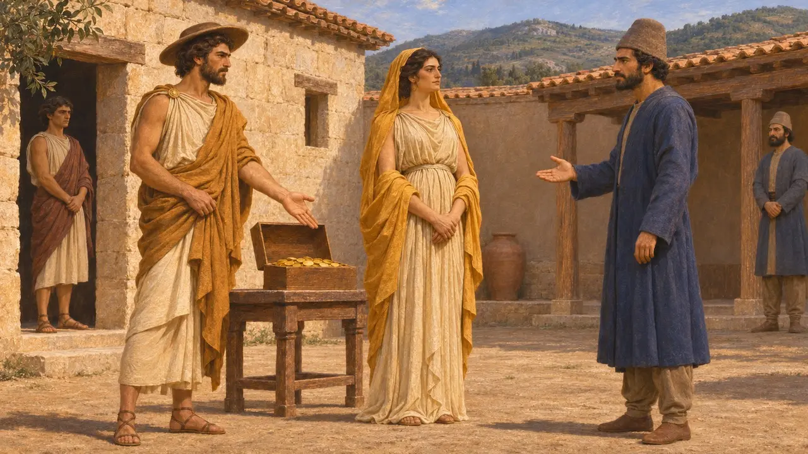
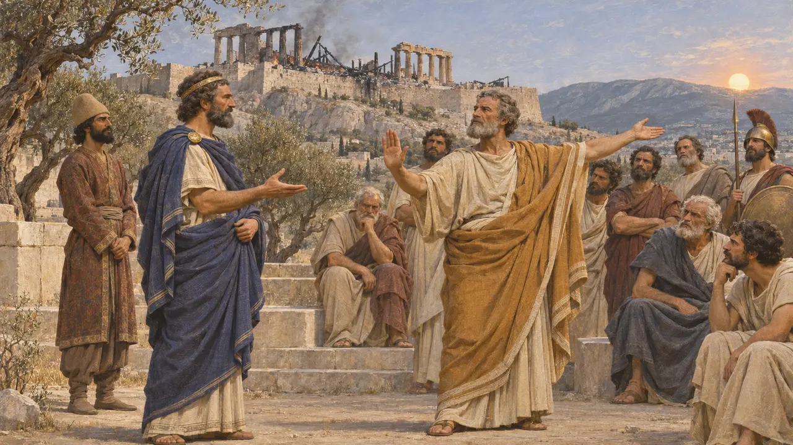
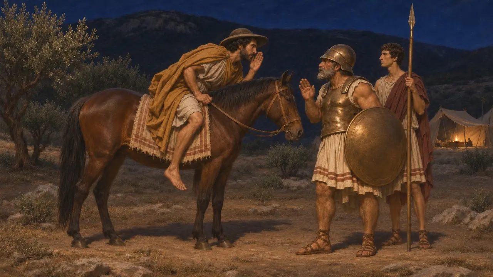
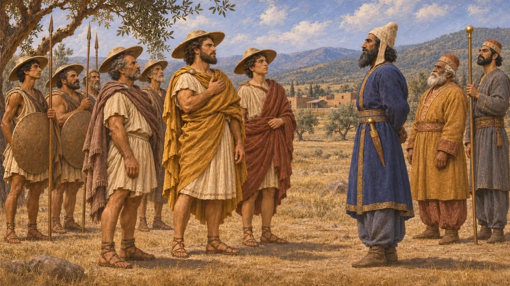

亚历山大一世在马其顿隶属波斯帝国期间担任马其顿国王。公元前479年，马多尼乌斯派他前往雅典，提出让雅典人与国王结盟；希罗多德又说，普拉提亚之战前他曾秘密骑马前往希腊人阵线向他们示警。他既是忠诚的藩属，又自称希腊人之友，这种双重身份使他成为这场战争中最难评判的人物之一。
游戏中： 游戏的编年史将亚历山大描述为一位臣属国王：他曾替马多尼乌斯向雅典转达议和条件，而据希罗多德记载，他还在普拉提亚之战前向希腊人通风报信。

使节与古盖娅的婚事
后世传说希罗多德记载，波斯使节前来向亚历山大的父亲阿敏塔斯索取土和水，却在宴会上侮辱马其顿妇女。年轻的亚历山大让一群没有胡须的少年假扮成女子，将使节们杀死。当波斯人布巴雷斯前来搜寻失踪的使者时，亚历山大以重金和将自己的姐妹吉盖娅许配给他为代价，换得了他的沉默。许多史家认为这是后来马其顿人编造的抵抗故事，而这桩婚姻本身恰恰表明了马其顿与波斯的密切关系。
Herodotus 5.17-21
国王的忠实臣民
古代记述希罗多德说，马多尼乌斯于公元前492年使马其顿人归附波斯。公元前480年，亚历山大派人告知据守坦佩河谷的希腊人，薛西斯的大军过于庞大，他们应当撤退。后来，他的部下进驻波奥提亚各城，向波斯人表明这些城邦站在波斯一方，从而保全了它们。希罗多德还提到德尔斐立有一尊亚历山大的黄金像。
Herodotus 6.44; 7.173; 8.34; 8.121

马多尼乌斯对雅典的提议，公元前479年
古代记述公元前479年，马多尼乌斯选派亚历山大为使者，因为他与波斯人有姻亲关系，又是雅典官方认定的友人和恩人。亚历山大提出，只要雅典归附国王，便可获得赦免、土地、自治，被焚毁的神庙也将得到重建。希罗多德让雅典人作出了一番骄傲的回绝：只要太阳仍沿着它的轨道运行，他们就绝不与波斯人议和。
Herodotus 8.136; 8.140-144

普拉提亚之战前的夜骑
古代记述据希罗多德记载，决战前夜，亚历山大独自骑马来到雅典人的前哨，求见他们的将领。他告诉他们马多尼乌斯打算在黎明发动进攻，自称有希腊血统，故而前来相告，并请求希腊人若得胜，不要忘了他。很久以后普鲁塔克也讲述了同一故事，很可能取材于希罗多德。
Herodotus 9.44-45; Plutarch, Aristides 15

希腊人之友还是波斯藩属
争夺中希罗多德着意强调亚历山大的希腊血统及其参加奥林匹亚竞技之事，而很久以后的作家更赠他“亲希腊者”之名。许多史家追随E.巴迪安的观点，认为希罗多德转述了马其顿人的说法，掩盖了亚历山大在公元前480年和479年为波斯效力之深。大流士的陵墓铭文在臣属民族中列有“戴盾形帽的爱奥尼亚人”。一些学者认为他们就是马其顿人，但这一比定尚有争议。
Herodotus 5.22; E. Badian, Herodotus on Alexander I of Macedon, 1994; DNa
来源
- Herodotus, Histories, books 5-9
- E. Badian, Herodotus on Alexander I of Macedon: a study in some subtle silences, 1994
- N. G. L. Hammond and G. T. Griffith, A History of Macedonia, vol. 2, 1979
- P. Briant, From Cyrus to Alexander, 2002
- M. I. Vasilev, The Policy of Darius and Xerxes towards Thrace and Macedonia, 2015